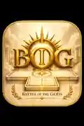

Survival horror · Multiplayer
Night Nurse Nightmare
Cooperative nursing simulator combining patient care, resource decisions and supernatural survival.
Explore details →A creative collection of original worlds, narrative writing, illustrations, animations, games, and inventions. Made to be explored by employers, collaborators, readers, and players alike.

Choose a medium. Every category opens its own vertically organized project list, and every project opens a detailed profile.
Cooperative nursing simulator combining patient care, resource decisions and supernatural survival.
Explore details →Airport-ground-operation inspired mini-games, built around multiplayer and accessible play.
Explore details →Tabletop-inspired racing with cards, movement and competitive mechanics.
Explore details →
Mythic gameplay and branded game-world development.
Explore details →An interactive visual story, distinct from the Coquí & Tito franchise.
Explore details →Original animal characters and family-friendly adventure worldbuilding.
Explore details →Character-led action and comedy with original animation and arcade concepts.
Explore details →Illustrated two-sided poetic journey and interactive artwork.
Explore details →A multi-generation family portrait presented through finished artwork and a sketch.
Explore details →Book-cover-style artwork, futuristic character design, and visual narrative.
Explore details →A gold-toned game-emblem design and visual identity.
Explore details →Select Short Stories, Poems or Books. Book titles open descriptions and information about where the work is currently available.
Five friends experiment with a Ouija board and discover that the haunting may be only beginning.
Explore details →A writing project awaiting an approved public manuscript.
Explore details →An invitation to preserve the moments and experiences that make life meaningful.
Explore details →A personal, familial reimagining of the ark as shelter, guidance and protection.
Explore details →Explore the AIM / AIM-47 universe, creative vision and available concept artwork.
Explore details →Original suspense stories about digital experiences that cross into real life.
Explore details →A curious coquí frog and Galápagos tortoise join other animals in adventures about teamwork and nature.
Explore details →An available collection of original poetry, including Into the Ark, Astral Dreams, and Heaven.
Explore details →Each universe has its own history, visual identity and connected media. These franchise pages connect back to writing, animation, artwork and games.
Stories, animation, children’s books and Battleboard-based gameplay.
Explore franchise →Original characters, martial arts storytelling and arcade concepts.
Explore franchise →Narrative universe, concept art, and future adaptations.
Explore franchise →An independent home for Battleboard, its play-tested game concepts and future platform plans.
Five-zone interchangeable tile system designed to support multiple games and their own components.
Explore details →A two-to-four-player battle game for Battleboard, with cards, dice, tokens and portable card-and-dice play.
Explore details →Ninjas Con Salsa: Battlegrounds, AIM: Battlegrounds, Graffiti Warz, Conquer Royale, Stackblocks and further concepts.
Explore details →Longer-term exploration of an electronic version of the modular game system.
Explore details →I'm Jose W. Ramirez, an Emerging Media Technology student and founder of Island Vibrations LLC. This portfolio highlights original storytelling, interactive design, animation, graphic work, game systems and physical prototypes.